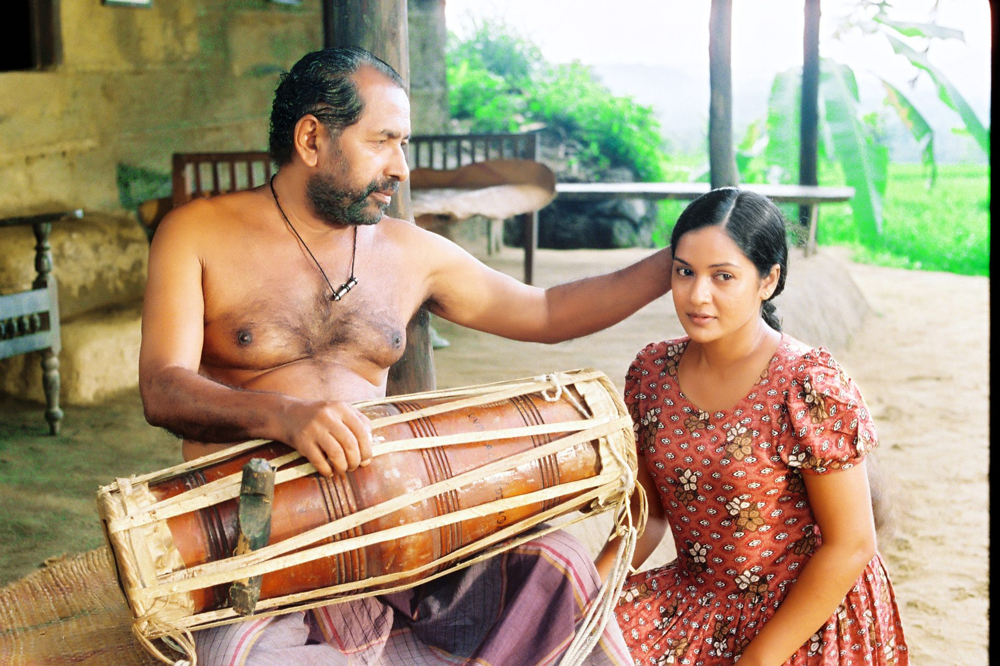
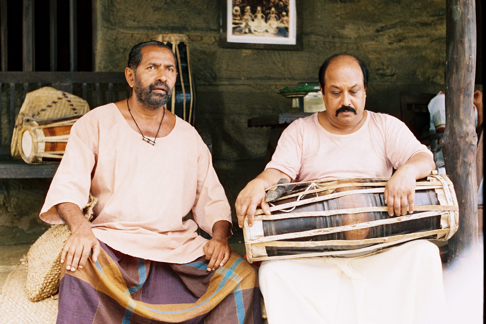
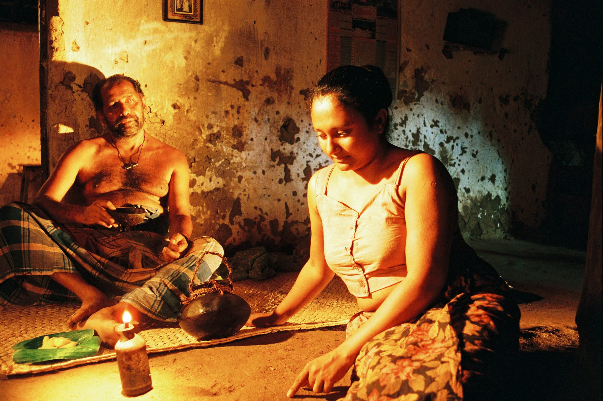
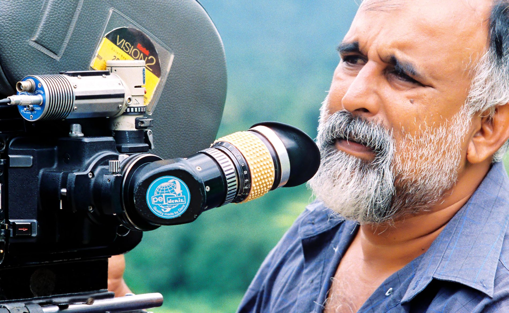
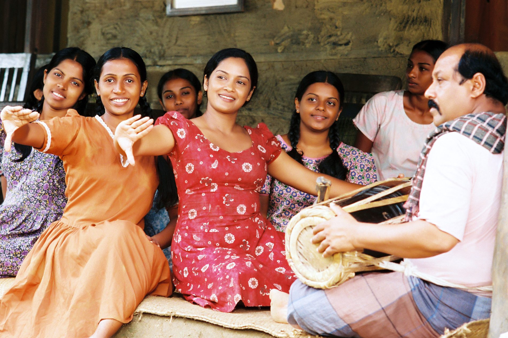

Reel 01 · 35mm · Sri Lanka
Frame 01 — The film
Soovisi Vivarana was finished eighteen years ago and never received the theatrical release it was made for.
The negative survived. Held in pristine condition, this 35mm production can now be seen the way it was originally made — and with it, the work of one of Sri Lanka's most admired actors, Jayalath Manoratne.
This year, the film finally reaches an audience.
Frame 02 — Jayalath Manoratne

Jayalath Manoratne was among the most respected figures of Sri Lankan stage and screen — an actor, dramatist and teacher whose work shaped a generation of performers.
His performance here is one of the last of his roles to reach an audience, and one of the reasons this film deserved a screen.
Manoratne received the Best Actor award for his work in Soovisi Vivarana — a performance almost no audience has had the chance to see.
Archive in progress — photographs, tributes and recollections from colleagues, students and collaborators.


Three of the stills in which he appears — more to be added as the archive grows
Frame 03 — The trailer
Out of reach for eighteen years. This is the first look.
Watch the trailer
How Soovisi Vivarana was made, where it went, and why it is coming back now — told by the people who were there.
Watch the documentaryFrame 04 — Recognition
The film was honoured on release. It simply never met the audience that the honours were meant to send to it.
Frame 05 — Cast & crew
Select a frame for the full credit.

Frame 06 — Shot on 35mm
Before cinema became largely digital, a story was caught one frame at a time on a strip of film.
Soovisi Vivarana was shot on 35mm. Eighteen years on, we are carrying that analogue image into a digital age — and paying attention to what changes along the way.
Analogue × Digital × AI
Restoring the film is also an opportunity to ask what happens when analogue cinema meets contemporary tools. We are documenting that work as we go.
Handling, inspection and long-term care of the original 35mm material.
Digitising the film and repairing what time has done to it, frame by frame.
Side-by-side comparisons of the same image on film and after scanning.
Frame 07 — On location
A reading off the light meter, a can of stock in the magazine, and no way to check the shot until the lab sent it back.
Taking a reading before the take. On 35mm the exposure had to be right in the moment — there was no screen to check it against.
Unit photographMore unit photography is being recovered from the production's own records. If you worked on the film and hold photographs, we would like to hear from you.
Frame 08 — The lost publicity
The negative is intact, but most of the material made to promote the film — posters, stills, press artwork, cinema displays — has been lost. We are rebuilding that world for a digital generation, and keeping a record of what was original and what is new.
Drag to compare — placeholder pairing until archival and recreated artwork is ready
Frame 09 — The return
Release details are being confirmed with distributors and exhibitors. Follow the release and we will tell you the moment tickets open.
Frame 10 — Universities & academics
We are inviting universities, student societies, academics, filmmakers and creative communities to take part in the return of Soovisi Vivarana.
Campus screenings with discussion, introduced by the people who made the film.
Jayalath Manoratne, Sri Lankan cinema, and the history around this production.
Analogue filmmaking, preservation and archival practice, using this film as a case study.
Contemporary tools applied to restoration, promotion and preservation.
Rebuilding the promotional world that has been lost over time.
We are also glad to support students and academics writing articles, research or publications on the film, on Manoratne, and on Sri Lankan analogue cinema.
Frame 11 — Partners
Frame 12 — Be part of the return
Universities, societies, filmmakers and creative communities.
Bring a screening to your university